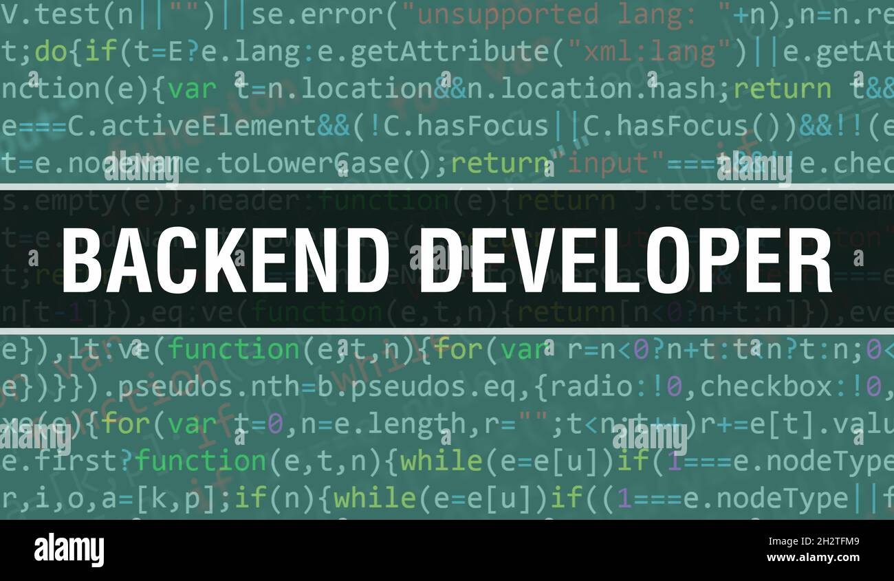

Sous la responsabilité du chef de projet informatique, le travail du développeur back-end est centré sur les fonctionnalités d’un site web. Précisément, il intervient à trois niveaux essentiels que sont le serveur, la base de données et l’application. Il analyse les besoins en se basant sur le cahier des charges fourni. Il peut travailler pour son employeur ou pour un client externe. C’est à partir de ce cahier des charges qu’il va mettre en place le serveur, le configurer et qu’il créera l’architecture fonctionnelle du site. On lui demande souvent de créer un site en partant de zéro, mais il peut aussi avoir à améliorer le back-end d’un site existant. C’est un professionnel spécialisé qui procède, souvent avec une équipe, aux tests de l’architecture réalisée. Ceux-ci peuvent prendre en compte le contrôle minutieux du fonctionnement de l’architecture ou l’élaboration des mesures correctives en cas de dysfonctionnement. C’est également à lui que revient la responsabilité d’assurer le suivi technique d’un site, de rédiger des notices et le mode d’emploi. Il assure également une veille technologique régulière pour mieux suivre l’évolution des techniques et des langages de programmation, en sachant que les sources d’information sont très souvent uniquement disponibles en anglais. Le métier de développeur back-end est fondamental, car un site web ne peut fonctionner sans cette partie invisible pour l’utilisateur. Le back-end est pour le site web ce qu’est une unité centrale pour un écran d’ordinateur.
|  |